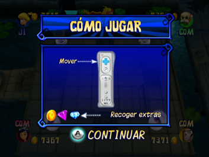

9 |
Modo de juego |
 |
Elige un personaje y entra en la mansión, donde te enfrentarás a muchos minijuegos, desafíos del tablero y eventos especiales que se activarán cuando pases por diferentes casillas o caigas en ellas. ¡Todo esto te ayudará a encontrar la contraseña para el tesoro escondido! Pantalla de dificultad En esta pantalla decides en qué dificultad quieres jugar. Hay tres niveles (fácil, medio y difícil). En los niveles más difíciles, te costará más responder a los acertijos y las contraseñas secretas serán más complicadas de adivinar. Ten en cuenta que según avances en el modo Aventura, los minijuegos se harán más complicados progresivamente. Pantallas Elige personaje y Elige combinación jugadores En esta pantalla los jugadores decidirán con cuál de los cuatro personajes quieren jugar y cuántos jugadores de inteligencia artificial (COM) habrá. Puedes acceder a la pantalla Elige combinación jugadores desde la pantalla Elige personaje. Hay cuatro opciones: 1 jugador real y 3 COM 2 jugadores reales y 2 COM 3 jugadores reales y 1 COM 4 jugadores reales Unirse a una partida ya comenzada En cualquier momento del juego, un jugador real puede remplazar a un jugador COM. Los nuevos jugadores deberán sincronizar el Wii Remote con la consola Wii (si no lo han hecho ya). Los nuevos jugadores remplazarán al jugador COM que corresponda a los indicadores de jugador de sus Wii Remotes respectivos. Por ejemplo, el Wii Remote que muestre el indicador del jugador 3 remplazará al jugador COM 3. El nuevo jugador sigue jugando con la cantidad de dinero que el jugador COM había acumulado hasta ese momento. Una vez que un nuevo jugador se ha unido a la partida, no puede ser remplazado por un jugador COM. Pantalla Cómo jugar (Desafíos del tablero)  Cuando empiece un desafío del tablero, se mostrará una pantalla que explica cómo jugar. Desbloquear minijuegos Al principio, no se puede acceder a todos los minijuegos en el modo Minijuegos. Pero según avances en el modo Aventura, desbloquearás más minijuegos en el modo Minijuegos. |
 |
 |
 |